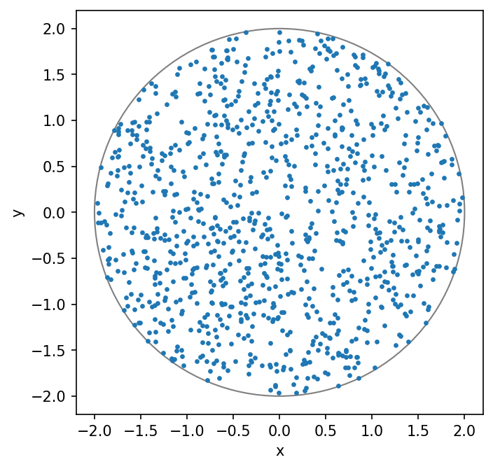
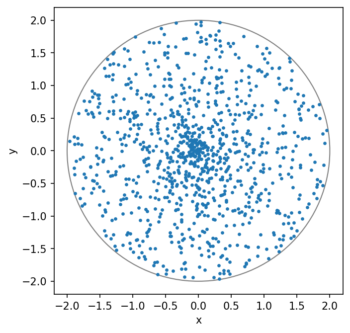
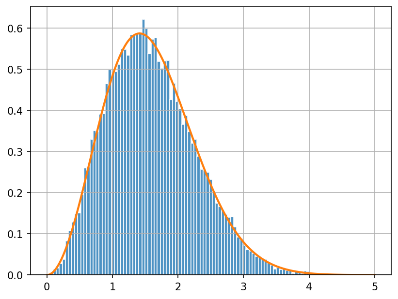

Lab 1: Sampling Random Variables#
For the class on Wednesday, January 8th
A. Uniformly sampling random points within a circle#
Here we are going to use two different methods to generate a set of points that are distributed uniformly at random within a circle of a given radius.
A1. Rejection sampling#
Our first method is rejection sampling. It is more straightforward to generate a set of points that are distributed uniformly at random within a square. If we can find a square that fully encompasses the circle, we can then generate the random points within the square first, and then reject those that are outside the circle.
For a circle of radius \(r\), the square that fully encompasses the circle would have a side length of \(2r\).
The function generate_points_within_square below generates points that are uniformly at random
within a square of side length \(2r\) (from \(-r\) to \(r\) on each side).
Then, the function generate_points_within_circle calls generate_points_within_square to get a set of points,
check if those points are within the circle, and keep only those that are within.
Note that it has to do this a few times to get the number of points that we desire.
Hence you see a while loop in that function.
Finally, the function visualize_points_within_circle plots both the generated points and the circle
for visual inspection.
Run the following two cells and see what they produce. You should also understand what the code is doing.
import numpy as np
import matplotlib.pyplot as plt
rng = np.random.default_rng()
def generate_points_within_square(radius, n_points):
x, y = rng.uniform(-radius, radius, size=(2, n_points))
return x, y
def generate_points_within_circle(radius, n_points):
x_collected = []
y_collected = []
while n_points > 0:
x, y = generate_points_within_square(radius, int(n_points))
is_within_circle = np.flatnonzero(x*x + y*y < radius*radius)
if len(is_within_circle) == 0:
continue
if len(is_within_circle) > n_points:
print(len(is_within_circle) - n_points, "points wasted")
is_within_circle = is_within_circle[:n_points]
x_collected.append(x[is_within_circle])
y_collected.append(y[is_within_circle])
n_points -= len(is_within_circle)
print(n_points, "points left to be generated")
return np.concatenate(x_collected), np.concatenate(y_collected)
def visualize_points_within_circle(x, y, radius):
fig, ax = plt.subplots(figsize=(5, 5), dpi=150)
ax.add_patch(plt.Circle((0, 0), radius, fill=False, color='grey', lw=1))
ax.scatter(x, y, s=5)
ax.set_xlabel("x")
ax.set_ylabel("y")
plt.show()
plt.close(fig)
radius = 2
n_points = 1000
x, y = generate_points_within_circle(radius, n_points)
visualize_points_within_circle(x, y, radius)
222 points left to be generated
33 points left to be generated
9 points left to be generated
3 points left to be generated
0 points left to be generated

Note that the rejection sampling method does not seem very efficient.
As you can see from the printout, tt has to call generate_points_within_square several times.
⚠️ Task: Can you modify this line in generate_points_within_circle so that it only calls generate_points_within_square once?
x, y = generate_points_within_square(radius, int(n_points))
(Note: you can edit the above code directly. Make sure to run the edited cell again.)
📝 Questions: What changes do you need to make above so that generate_points_within_square is only called once?
Justify the change you made.
Even though the rejection sampling method is not the most efficient, it is a powerful method as it can be applied to many scenarios when we cannot obtain an explicitly functional form of our desired random variable. But for the case of uniformly sampling random points within a circle, there is certainly a more efficient method, which we will see next.
A2. Inverse transform sampling#
When we know the cumulative distribution of the random variable that we want to sample, we can use the inverse transform sampling method. The inverse transform sampling method sends a standard uniform random variable, \(U(0, 1)\), to the inverse function of the desired random variable’s cumulative distribution function (CDF). Let’s see how it works in action.
To sample random points within a circle, we can use the polar coordinate system \((r, \phi)\). Here \(r\) and \(\phi\) are the radius and the angle, respectively, and most importantly, they are independent random variables when the points are uniformly at random. That is, the probability density function (PDF) of \(\phi\) does not have any dependence on \(r\) and vice versa.
The PDF of \(\phi\) is just a uniform random variable from 0 to \(2\pi\), \(U(0, 2\pi)\), but the PDF of \(r\) is not uniform. There are most area near the outer edge of the circle, and hence we will need more points there. The PDF of \(r\) is actually proportional to \(r\). This makes sense because the area of a annulus at radius \(r\) is proportional to \(2\pi r\).
We can write the PDF of \(r\) as
Here \(A\) is the normalization constant that makes the integral of \(p(r)\) over the entire circle equal to 1.
📝 Questions: Complete the following calculations.
If the full circle has a radius of \(R\), find the value of \(A\).
The CDF of \(r\) (our random variable) is then \(F(r) = \int_0^r p(r') dr'\). Find the function \(F(r)\).
Find the inverse function of \(F(r)\), \(F^{-1}(u)\), such \(F(F^{-1}(u)) = u\).
Let’s implement the inverse transform sampling method now.
In the function generate_points_within_circle_inverse_sampling below, u is sampled from a standard uniform random variable.
The existing code just set \(r = Ru\) (note that \(R\) is the radius of the circle, which is called radius in the code),
but that is not correct. You can run the following two cells and see what they produces.
You should also understand what the code is doing.
⚠️ Task: Implement the correct method by change the second line to match what you obtain for \(F^{-1}\) above. Re-run the cells and visually confirm that the points are uniformly distributed within the circle.
def generate_points_within_circle_inverse_sampling(radius, n_points):
u = rng.random(size=n_points) # generates standard uniform random numbers in [0, 1)
r = u * radius # Not the correct implementation yet!
theta = rng.uniform(0, 2 * np.pi, size=n_points)
x = r * np.cos(theta)
y = r * np.sin(theta)
return x, y
x, y = generate_points_within_circle_inverse_sampling(radius, n_points)
visualize_points_within_circle(x, y, radius)

B. Maxwell-Boltzmann Distribution#
The Maxwell-Boltzmann distribution describes the distribution of speeds of ideal gas particles that are in thermodynamic equilibrium.
Note that the speed is the magnitude of the velocity vector, which is a three-dimensional vector. When the ideal gas particles are in thermodynamic equilibrium, their velocities in a specific direction (e.g., \(v_x\)) actually follow a Gaussian distribution.
In other words, the velocity vector \(\mathbf{v} = (v_x, v_y, v_z)\) follows a three-dimensional multivariate Gaussian random variable, with the variance in each direction being the same. And the Maxwell-Boltzmann distribution is the probability density function of the speed, \(v = |\mathbf{v}|\).
Let’s verify this with code. We will first sample the full velocity vector \(\mathbf{v}\) from the standard normal distribution.
We will then calculate the speed \(|\mathbf{v}|\) (called v_abs in the code) and plot the histogram of the speeds.
Finally, we will overplot the PDF of the Maxwell-Boltzmann distribution on top of the histogram to see if they match.
Conveniently, scipy.stats has implemented both distributions for us so we can use them directly.
In fact, scipy.stats has implemented a large number of commonly used distributions
and they will come in handy often!
Run the following two cells. You should understand what the code is doing.
from scipy.stats import norm, maxwell
n_points = 20000
v = norm.rvs(size=(n_points, 3))
v_sq = (v * v).sum(axis=1)
v_abs = np.sqrt(v_sq)
fig, ax = plt.subplots(dpi=150)
ax.hist(v_abs, bins=100, density=True, alpha=0.8, edgecolor="w")
ax.grid(True)
x = np.linspace(0, 5, 1001)
ax.plot(x, maxwell.pdf(x), lw=2, color="C1");

Chi and Chi-squared Distributions#
The Maxwell-Boltzmann distribution is actually a special case of the chi distribution. In a \(k\)-dimensional space, the distribution of the Euclidean distance between a multivariate Gaussian random variable (with equal variance on each dimension) and the origin is called the chi distribution with \(k\) degrees of freedom. As such, the Maxwell-Boltzmann distribution is the chi distribution with \(k=3\).
⚠️ Task: In the cell above, add a new curve with a different color that shows the PDF of the chi distribution with \(k=3\).
You will need to import chi from scipy.stats.
You might have now gaussed that the famous chi-squared distribution is just the distribution of the square of a random variable that follows the chi distribution.
Say \(Z\) is a standard Gaussian random variable, and if we have define
Then \(Y\) follows the chi distribution with \(k\) degrees of freedom, and \(Y^2\) follows the chi-squared distribution with \(k\) degrees of freedom.
⚠️ Task: In the cell below, plot the histogram of v_sq (the square of the speed)
and overplot a curve that shows the PDF of the chi-squared distribution with \(k=3\).
See if they agree with each other.
You will need to import chi2 from scipy.stats.
# Implement your plot here.
📝 Questions: We often hear about people doing the chi-squared test or calculating the chi-squared value when comparing data to a model. Based on what you learn here, what assumption about the differences between the data and the model is made when people use the chi-squared test?
Tip
Submit your notebook
Follow these steps when you complete this lab and are ready to submit your work to Canvas:
Check that all your text answers, plots, and code are all properly displayed in this notebook.
Run the cell below.
Download the resulting HTML file
01.htmland then upload it to the corresponding assignment on Canvas.
!jupyter nbconvert --to html --embed-images 01.ipynb